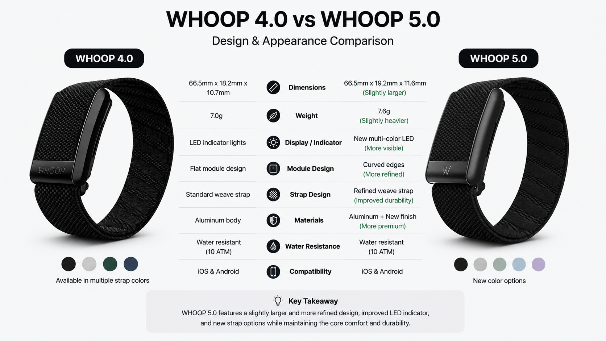

I’ve been using WHOOP daily for more than two years, first with the WHOOP 4.0, and now I’ve switched to the new WHOOP 5.0. If you’re stuck choosing between these two models — whether to upgrade, or save money with a 4.0 — I’ve been in your exact position.
Most online reviews only talk about battery life, but I’ve tested both devices side-by-side for weeks. I’m going to share the real, daily differences that actually matter, and help you pick the right one without wasting time or money.
| Item | WHOOP 4.0 | WHOOP 5.0 |
|---|---|---|
| Battery Life | Around 5 days | Up to 10 days |
| Sensor Hardware | Standard tracking sensors | Upgraded accuracy for HRV & sleep |
| Subscription | Monthly membership required | Monthly membership required |
| Best For | Casual users & budget buyers | Daily users & recovery-focused athletes |
The biggest upgrade I noticed on the WHOOP 5.0 is battery life. With the WHOOP 4.0, I charged it every 4-5 days without exception. It was a small hassle, but I always worried it would die while tracking my sleep overnight.
Going to 10 days of battery changes everything. I can travel, workout daily, and never stress about charging. It’s a small quality-of-life win that makes the device far more enjoyable to use long-term.
The new sensors also make sleep and HRV readings far more consistent. My WHOOP 4.0 would give odd nap data or shaky recovery scores sometimes, but the WHOOP 5.0 fixes that completely. The data feels reliable every single day.
No fluff, no bias — just straight advice based on weeks of real use.
✅ Choose WHOOP 4.0: Budget-friendly, great for casual daily use.
✅ Choose WHOOP 5.0: Best for daily wear, longer battery & accurate data.
Q: Is upgrading to WHOOP 5.0 really worth the money?
A: If you wear it every day and care about accurate sleep and recovery data, yes. The double battery and better sensors make a real difference. If you only use it occasionally, stick with the WHOOP 4.0.
Q: Do both devices use the same subscription?
A: Yes, the monthly membership is identical for both models. No extra cost for the 5.0 beyond the device itself.